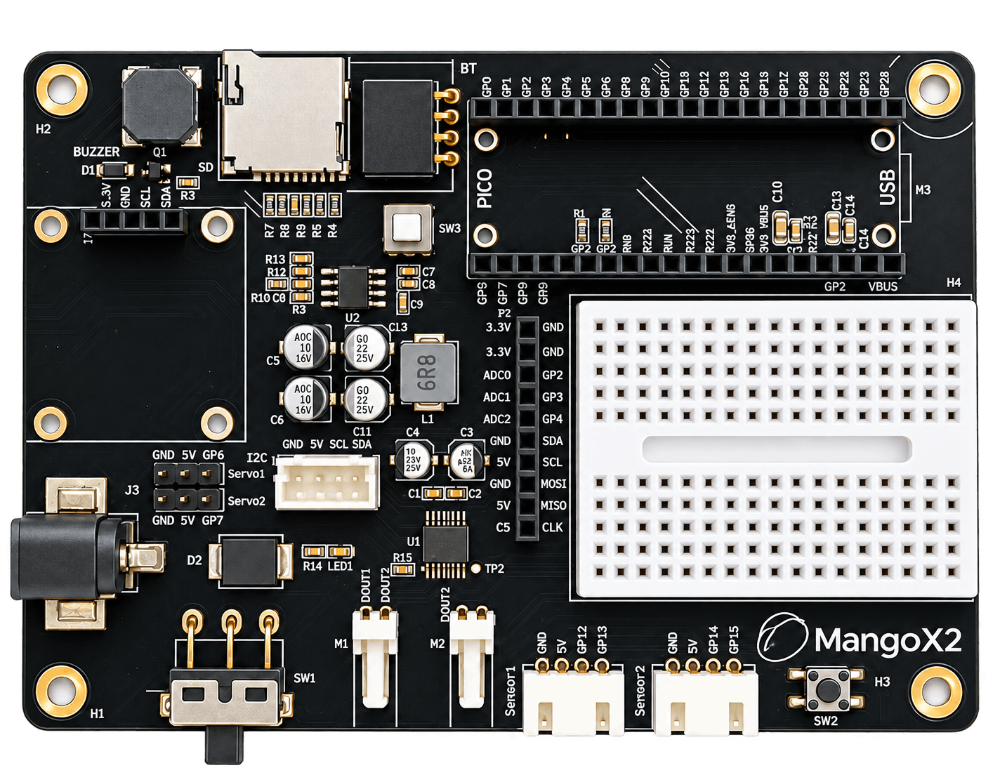

01
接線與感測擴充
提供兩組 XH2.54 Sensor Port、一般 GPIO、ADC、SPI、I2C 與 UART 介面，方便連接不同感測與互動裝置。
 MangoBoxAI 精準教學平台
MangoBoxAI 精準教學平台
從程式設計延伸到電子實作
電路板研發設計｜羅治民 教授
MangoX2 是為程式設計、電子實作與互動原型開發設計的 Raspberry Pi Pico 系列擴充電路板。板上整合馬達驅動、MicroSD、蜂鳴器與多種 Sensor、Servo、SPI、I2C、ADC 與 UART 擴充介面，並預留 mini 麵包板安裝區，讓使用者可從程式控制進一步延伸到接線、基本電子電路、互動裝置與機器人應用。
MangoX2 將 Pico 系列核心運算板、電源與控制電路、擴充接頭及 mini 麵包板實作區整合在同一塊載板上。

MangoX2 的設計重點不是把單一用途固定在板上，而是提供可直接使用的控制能力與清楚的硬體擴充路徑。
提供兩組 XH2.54 Sensor Port、一般 GPIO、ADC、SPI、I2C 與 UART 介面，方便連接不同感測與互動裝置。
板上整合 DRV8833 Motor Driver，另提供兩組 Servo 介面，可發展智慧車、機器人與動作型互動作品。
PCB 預留 mini 麵包板安裝區，讓使用者能在同一平台上練習接線、組合元件與探索基本電子電路。
板載 MicroSD 卡槽，並提供 BT/BLE UART、SPI 與 I2C 擴充能力，為資料紀錄與進階裝置整合預留空間。
以下只描述 MangoX2 電路板本體的固定連線與實體介面；教學套件中另行安裝的模組不屬於本頁硬體定義。
UART0：可映射至 BT/BLE 的 GP0/GP1，現行 Host UART 亦使用 UART0SPI0：GP16 MISO / GP18 SCK / GP19 MOSII2C0：GP20 SDA / GP21 SCL，可共享MangoX2 以 Pico 系列 40Pin 外形與腳位配置為核心，可搭配 Raspberry Pi Pico、Pico W 與 Pico 2 W。載板的外部 GPIO 對應維持一致，但 Pico 模組內部功能（例如板載 LED）會因型號而不同。
「可作一般 GPIO」是以電路板連線而言；實際執行時仍需確認該 Pin 是否已被 Runtime、匯流排或其他裝置占用。
| GPIO | Pico 實體 Pin | MangoX2 主要用途 | 實體位置 / 類型 | 一般 GPIO | 主要限制與注意事項 |
|---|---|---|---|---|---|
| GP0 | 1 | BT/BLE UART TX | BT 4Pin 接頭 | 條件式 | 使用 UART0 TX；與 GP12/13 的 Host UART 在 peripheral 層互斥。 |
| GP1 | 2 | BT/BLE UART RX | BT 4Pin 接頭 | 條件式 | 使用 UART0 RX；與 GP12/13 的 Host UART 在 peripheral 層互斥。 |
| GP2 | 4 | General GPIO | 一般擴充 | 可以 | 可依需求配置數位 I/O 或對應的 alternate function。 |
| GP3 | 5 | General GPIO | 一般擴充 | 可以 | 可依需求配置數位 I/O 或對應的 alternate function。 |
| GP4 | 6 | General GPIO | 一般擴充 | 可以 | 亦支援 UART1、I2C0、SPI0 等 alternate function。 |
| GP5 | 7 | MicroSD CS / TF_CS | 板載 MicroSD | 條件式 | MicroSD 啟用時作為 SD CS；MangoX2 未另外將 GP5 breakout 為獨立使用者接頭。 |
| GP6 | 9 | Servo1 Signal | Servo1 3Pin 接頭 | 條件式 | 未啟用 Servo 時可依需求作 GPIO / PWM；須避免與其他配置重複占用。 |
| GP7 | 10 | Servo2 Signal | Servo2 3Pin 接頭 | 條件式 | 未啟用 Servo 時可依需求作 GPIO / PWM；須避免與其他配置重複占用。 |
| GP8 | 11 | Motor A IN2 | 板載 Motor Driver | 固定用途 | PCB 已連接 DRV8833 Motor Driver，建議視為固定資源。 |
| GP9 | 12 | Motor A IN1 | 板載 Motor Driver | 固定用途 | PCB 已連接 DRV8833 Motor Driver，建議視為固定資源。 |
| GP10 | 14 | Motor B IN2 | 板載 Motor Driver | 固定用途 | PCB 已連接 DRV8833 Motor Driver，建議視為固定資源。 |
| GP11 | 15 | Motor B IN1 | 板載 Motor Driver | 固定用途 | PCB 已連接 DRV8833 Motor Driver，建議視為固定資源。 |
| GP12 | 16 | Sensor1 A / UART0 TX | Sensor1 XH2.54 | 條件式 | Sensor1 接頭提供 GND / 5V / GP12 / GP13。Host UART 啟用時 GP12 作 UART0 TX。 |
| GP13 | 17 | Sensor1 B / UART0 RX | Sensor1 XH2.54 | 條件式 | Host UART 啟用時 GP13 作 UART0 RX；此時不可再獨立作 Sensor GPIO。 |
| GP14 | 19 | Sensor2 A | Sensor2 XH2.54 | 條件式 | Sensor2 接頭提供 GND / 5V / GP14 / GP15；實際用途由應用或 Runtime 設定決定。 |
| GP15 | 20 | Sensor2 B | Sensor2 XH2.54 | 條件式 | 與 GP14 同屬通用雙訊號 Sensor Port；須確認目前模組是否已占用。 |
| GP16 | 21 | SPI0 MISO / MicroSD MISO | SPI / 板載 MicroSD | 條件式 | MicroSD 或 SPI0 使用中時不可再作獨立 GPIO。 |
| GP17 | 22 | External SPI CS | SPI 擴充 | 條件式 | 外部 SPI 裝置 CS；MicroSD 不使用此 CS，MicroSD 使用 GP5。 |
| GP18 | 24 | SPI0 SCK / MicroSD CLK | SPI / 板載 MicroSD | 條件式 | SPI0/SD 啟用時不可獨立作 GPIO；若改作 I2C1 SDA 也屬互斥配置。 |
| GP19 | 25 | SPI0 MOSI / MicroSD MOSI | SPI / 板載 MicroSD | 條件式 | SPI0/SD 啟用時不可獨立作 GPIO；若改作 I2C1 SCL 也屬互斥配置。 |
| GP20 | 26 | I2C0 SDA | I2C 擴充 | 共享匯流排 | 可與相容的 I2C 裝置共用；需避免 I2C address 衝突。 |
| GP21 | 27 | I2C0 SCL | I2C 擴充 | 共享匯流排 | 與 GP20 組成 I2C0；不應把單一 I2C 裝置視為永久獨占兩支 Pin。 |
| GP22 | 29 | PCB Buzzer | 板載蜂鳴器 | 固定用途 | MangoX2 PCB 已連接蜂鳴器，建議視為固定板載資源。 |
| GP26 | 31 | ADC0 / GPIO | ADC 擴充 | 可以 | 可作類比輸入或一般 GPIO；GPIO 邏輯仍為 3.3V。 |
| GP27 | 32 | ADC1 / GPIO | ADC 擴充 | 可以 | 可作類比輸入或一般 GPIO；GPIO 邏輯仍為 3.3V。 |
| GP28 | 34 | ADC2 / GPIO | ADC 擴充 | 可以 | 可作類比輸入或一般 GPIO；GPIO 邏輯仍為 3.3V。 |
GP23、GP24、GP25 與 GP29 屬 Pico 模組內部資源，不在 Pico 40Pin 接頭上，因此不是 MangoX2 的外部 breakout。普通 Pico 的板載 LED 使用 GP25；Pico W / Pico 2 W 的板載 LED 則走無線控制器的 WL_GPIO0 路徑。
以下限制來自 MangoX2 的實際電氣連線與 Pico peripheral 多工方式。進行低層 MicroPython 或自訂硬體開發時，應同時考慮 GPIO 與 peripheral / bus 的占用狀態。
部分 MangoX2 接頭提供 +5V 電源，但 Pico / Pico W / Pico 2 W 的 GPIO 訊號仍是 3.3V logic。接外部模組前應確認訊號電壓相容。
BT/BLE 接頭使用 GP0/GP1 的 UART0；現行 Host UART / USB-to-TTL 使用 GP12/GP13 的 UART0。兩組 Pin 不重疊，但使用的是同一個硬體 UART，因此不可同時作為兩組獨立 UART0。
MicroSD 使用 GP5 作 CS，外部 SPI 接頭使用 GP17 作 CS；兩者共享 GP16/GP18/GP19。SPI 裝置可在正確的 CS 與軟體管理下共享 bus，但使用期間這三支 Pin 不應再當獨立 GPIO。
GP20/GP21 應視為 I2C0 SDA/SCL。多個 I2C 裝置可共用同一組 Pin，但需要確認位址不衝突、電壓與上拉條件相容。
依實體 PCB 背面印刷，由上到下為 TX / RX / GND / 5V。TX 是 MangoX2 / Pico 的輸出（GP0），RX 是輸入（GP1）；使用一般 UART 模組時應依裝置 TX/RX 方向交叉連接。
SW3 只切換 BT/BLE 接頭的 5V 供電，不是 MangoX2 全板電源。若模組仍插在插座上，即使 SW3 關閉，GP0/GP1 仍與未供電模組保持實體連接。